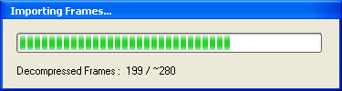

Breaking Down Technique
1. Setting up a Working Zone and switching to Analysis mode.
With the help of the selection cursors and , specify a small working zone, relating to the motion to be broke down.
Once the sequence is short enough, the switch to Analysis mode is triggered.

The video length from which the sequence switches to this mode can be
set in the Preferences dialog, at Play/Analysis Screen tab.
The default duration is 12 seconds.
For more informations, please consult General Preferences.
2. Breaking down motion.
Analysis mode allows a finer control of playback speed. You can use the position cursor  to navigate within the sequence in real time.
to navigate within the sequence in real time.
Tip : you can also use the mouse wheel to make your way through the video.